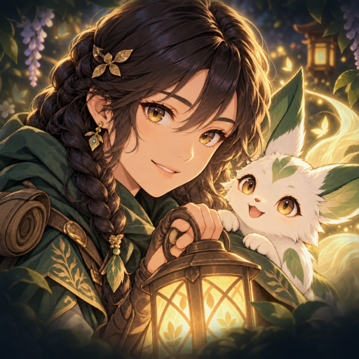

<- all projects

Yokai Signal
PC
Volume
Live
Draw safe forest routes, match spirit powers to hazards and bring lost yokai home.
Yokai Signal is an anime route-planning puzzle game. Guide Hana the spirit ranger across a haunted forest, pair companion powers with the hazards in her way and build bonds with every creature she saves. Drag across connected lantern nodes, read the light cost and danger, then send Hana when the route is right. Flame burns brambles, Bridge crosses deep water and Light clears night shadows, while day and night change which paths are safe. Rescue 24 spirit forms across four biomes, spend crystals on 13 habitat upgrades and work through 60 campaign boards.